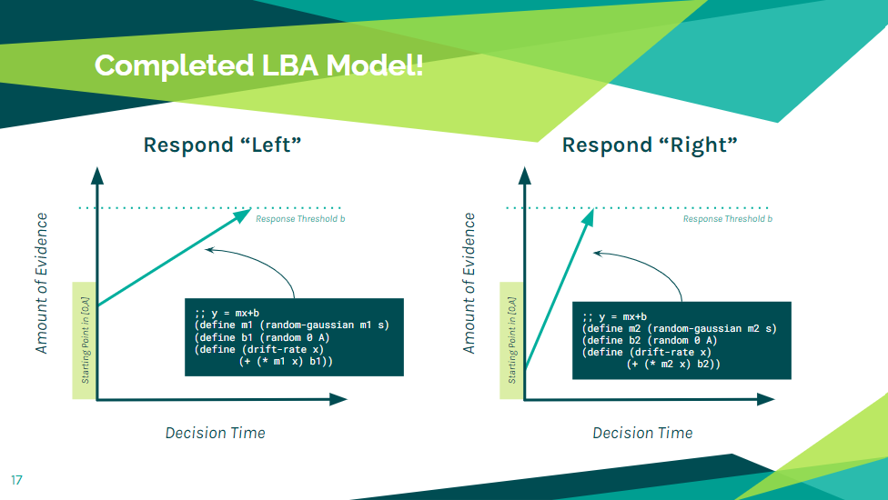
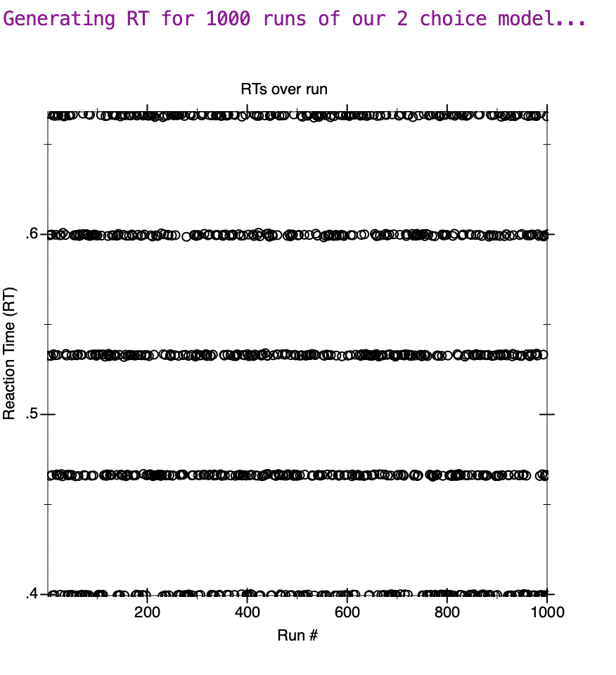

Linear Ballistic Accumulator Model
Group 5: Kyle, Yueping, Li, & Annie | Dec 2022
1 Introduction: What is LBA?
The LBA Model of decision-making represents n choices as a race between n accumulators.
2 History of LBA
3 Building the LBA Model
For a given number of choices, the LBA model is implemented by graphing a simple linear line y=mx+b on a 2D plane with the following:
Note that,
It is up to us to decide on the values for A,b, and other variables necessary to make this model work
It could be enough to implement the N = 2 case illustrated in the reading and allude to the N = 3, 4, ... and general ith as further reading and/or next steps
Understanding how the LBA model works
Next, let’s explore how we can build our own LBA model. But, in order to implement one, we first need to understand how it works.
If you need to model a decision on four choices (pick banana, apple, orange, or grape), no problem
Need 16 choices? (pick a number between 1 and 16), no problem either.
In the interest of time, we’ll show you the model on two choices today, and leave the general ith cases for you to look at in the further reading linked at the end. So, let’s say I ask all of you to make a decision: pick “left” or “right”.
When the "Right" reaches threshold first
We can model an average person’s predicted response time to this binary decision using the LBA model. On the screen, we see two linear accumulators, representing each of the two choices, both racing upwards towards this common response threshold b.
On the y axis, we have the amount of evidence that supports your choice of each response, and on the x axis, we have the amount of time that passes - i.e. the decision time.
Notice that the activation in each accumulator begins at a random point between zero and A. This A represents the maximum amount of evidence one could possibly have coming into the decision making.
Are you left handed and generally pick left over right anytime you’re given that decision to make? Is there potentially someone waving frantically on the right side of the room that could prompt you to be more inclined to pick right? These possibilities of existing evidence in your memory are accounted for as you set A when building the model.
Notice also that the line increases at different rates. In fact, for every single decision the set of rates is fixed, but from one decision to the next, the rate fluctuates according to a normal distribution. So here is one arbitrary decision, and here’s another arbitrary decision:
When the "Left" reaches threshold first
A response is given by whichever accumulator first reaches the threshold b - in this particular decision, we see that the choice response is “left” as the accumulator line reaches b first.
Run the Model
Whereas in this run of the model, the response is “right”. From here, we’re able to predict our response time depending on the time taken to reach that threshold. This is as simple as reading the associated x value at the time the accumulator hits b.
What about Biaes?
Now, you may be wondering, “not every single decision is as simple as telling someone to randomly pick left or right” You’re right - and let’s say before you made a decision, I tell everyone to make sure to pick “right”.
The model accounts for this as we can set individual thresholds for each choice to account for biased decisions when building the model. In the case where I tell you to pick right, we would need to update the right threshold to reflect this bias in our model.
Does this mean then, that everyone will pick right?
No - some of you may have a rebellious streak and opt to pick left when told to pick right.
Running this model enough times, we’d likely be able to see a single decision like this representing your rebellion -
It’s just less likely since we would expect the average person to select right in our theoretical world. This is accounted for as we generate the accumulators in our model.
Building the Model
Now, there’s just one last step to building your own model: generating the lines!
Luckily for you, all you need for this is to know the equation of a line (y=mx+b) and a statistics library.
As we’ve seen already, each accumulator is linear, so what we need to do is for our model to generate a set of m and b for each choice for each run.
Generating "b"
We already know where b comes from: somewhere in between the range [0,A] inclusive.
We pick a uniformly distributed random variable k in the range [0, A].
The fact that it is uniformly distributed really just means that there is an equal chance for each number between 0 and A to be chosen, so you might use Racket’s random function to generate a number between 0 and A to set your “b” in each equation.
Generating "m"
M is the drift rate (speed at which each accumulator increases by) is just a little bit more complicated.
First, for each of your choices, you’ll need to find out the mean slope for each accumulator. For instance, in the biased case where I told everyone that the right answer is ‘Right’ and expect most people to pick Right fast, while those who chose to rebel maybe would on average, say, take a few extra seconds to deliberate whether to listen or rebel.
So my mean slope for choice 1 “Left” would be lower - let’s say 1, whereas my mean slope for choice 2 “Right” would be higher - let’s say 10.
Using these mean slopes, you then need to use the normal distribution with the respective mean and a common standard deviation s to generate another random variable for your drift rate.
What this means is you’ll be more likely to get drift rates closer to the mean for each of your accumulators - which should make sense!
A completed model!

Putting this all together, you now have an LBA model to model choice response time!
Modelling 3 choices and above involves setting an additional accumulator for each of your additional choices.
But as we said earlier, we’ll leave this for you to discover on your own!
4 Pros and Cons of LBA
Pros: 1.Linear nature of LBA as a choice response time model allows for easily interpretable “analytic solutions for predicted distributions and probabilities” (Brown and Heathcote, 2007) 2.Solutions using the LBA model can be used with any number of response choices (N = 1, 2, … , k) Cons:
1.Leaky Competitive Accumulator (Usher & McClelland), includes non-linear random variability to oscillate the start points (k) and drift rates (d)
These fluctuations mimic changes in Na+ / K+ membrane pot. and firing rates in BN
LBA removes random variability in favour of simpler model, deviates further from BN
Authors argue all models have biological inaccuracies; should not cast away LBA implications
2.LBA model also leaves out other sources of variability:
Random-dot kinematograms (moment-to-moment var.)
Non-linear biases (if one source of evidence heavily introduced at beginning or end of sequence, responses will reflect these biases).
Cognitive Biases (Primacy & Recency Effect)
5 Applications of LBA
Understanding the effects of Methylphenidate using the linear ballistic accumulator model
Why should we care about it?
“Methylphenidate is used to treat children with attention deficit hyperactivity disorder (ADHD). It helps with hyperactivity and impulsive behaviour, and allows them to concentrate better. It is also used to treat adults with ADHD or narcolepsy (a sleep disorder). Methylphenidate is only available on prescription. It comes as standard (immediate release) tablets and capsules and slow release (also called extended, modified or prolonged release) tablets and capsules.” (NHS, 2021)
Click here for more details.
We all should care about mental health, and that leads us to the LBA model, the model will help us understand more about how this medication works in terms of response time and evidence accumulation.
How is the model related to the methyphenidate?
•There are enough evidences of the effect of methylphenidate towards simple perceptual tasks.
E.g. Reading a word, recall a name of an object
People who received treatment of methylphenidate have improved their response time towards simple tasks.
•But there were Lack of evidence of how methylphenidate improves cognitive ability on conflict tasks.
E.g. Tasks that involves interference.
What is a task that involves interference? Here is an example.
The Flanker’s Test
The Flanker’s test require participants to tell the researcher the direction of the middle arrow. There are two types of the condition. The first condition is congruent condition, where all the arrows are toward to the same direction. But the second condition, which is the incongruent condition, the middle arrow is the opposite direction with the other arrows.
If the middle arrows are marked in colors, it is easy to identify which direction the arrow towards to. If the participants are told which type of the condition they are doing, it will also be easy to identify the direction of the middle arrow. However, in a real test, they won’t be told, neither will be the middle arrow marked in color. So, it takes time and effort. If we try to think the flanker’s test in a LBA model, the threshold might be lower due to the biaes (other arrows), and the response time will be longer.
Hypothesis
They hypothesis (a promised hypothesis) that the methylphenidate and other stimulants improves evidence accumulation by increasing accumulation accuracy, (focus more on related evidence and less on unrelated evidence) thus increase response time and cognitive performance. So, the model fits the effects of methylphenidate. (Weigard, Heathcote & Sripada,2019)
•They want to use the LBA to analyse how the methylphenidate influence people’s cognitive ability on conflict tasks.
Conclusion
•By using the LBA model, they found that the methylphenidate can improve cognitive ability by reducing response threshold and increase the accumulation accuracy. (Weigard, Heathcote & Sripada, 2019)
References
Weigard, A., Heathcote, A. & Sripada, C. Modeling the effects of methylphenidate on interference and evidence accumulation processes using the conflict linear ballistic accumulator. Psychopharmacology 236, 2501–2512 (2019). https://doi.org/10.1007/s00213-019-05316-x
6 Further Readings
Applications:
Programming the LBA model with R and Matlab
The Linear Ballistic Accumulator (LBA) - R
The Linear Ballistic Accumulator (LBA) - Matlab
methods for fitting the LBA model
7 Our Demo!
Now, we invite you to explore the LBA Model using our demo! To access it, users have 2 choices:
"If you want an interactive input, run interlba.rkt and open the console! You will be prompted to set up your model by entering your own observed means, thresholds etc."
"If you just want to run the code on a preset model (or easily modify variables between runs), run the lba.rkt file!"
Note: the latter has no input verification, so make sure to set the values according to how they have been defined in Section 3!
Running either file, we will first generate a report on our model:

Then, we will observe what happens to the RT when the model is run 10, 100, 1000, and 10000 times to try and visually see if the RT converges to a common value:

7.1 Interesting Observations
As the number of runs increases, it becomes very clear that there is not one "common" RT that the model converges to. Rather, there are A number of RT values the model converges to. This makes sense: recall that A is the maximum possible k value (0 ≤ k ≤ A) where k is an integer that represents the y-intercept of our accumulator line. Depending on the value of k, the RT would be faster. Notice also that the density of each of the A lines visually seem quite even. This should also make sense, because k is uniformly distributed (i.e. each value between [0, A] has an equal chance of being k each run of the graph).
7.2 Code Overview
In-line documentation is provided in each file! Our demo is built on 4 key racket files:
lba.rkt and interlba.rkt are the two demo files for the two ways you can run the demo
testlba.rkt contains the wrapper functions which reports the model & runs it x times
buildlba.rkt contains the key functions which builds the model
plotlba.rkt contains the main functions used to graph the model and its reports
7.3 Github Repo
This code is also available via Github